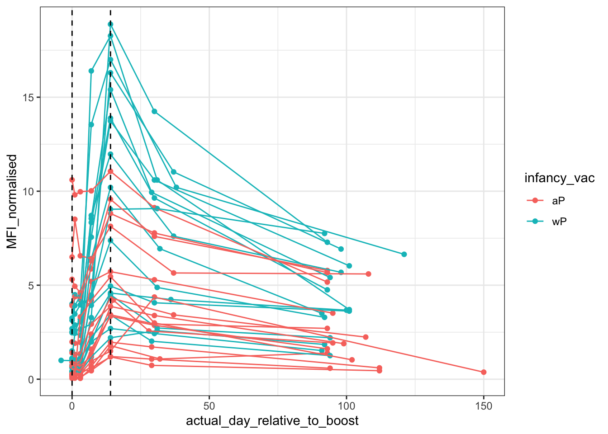
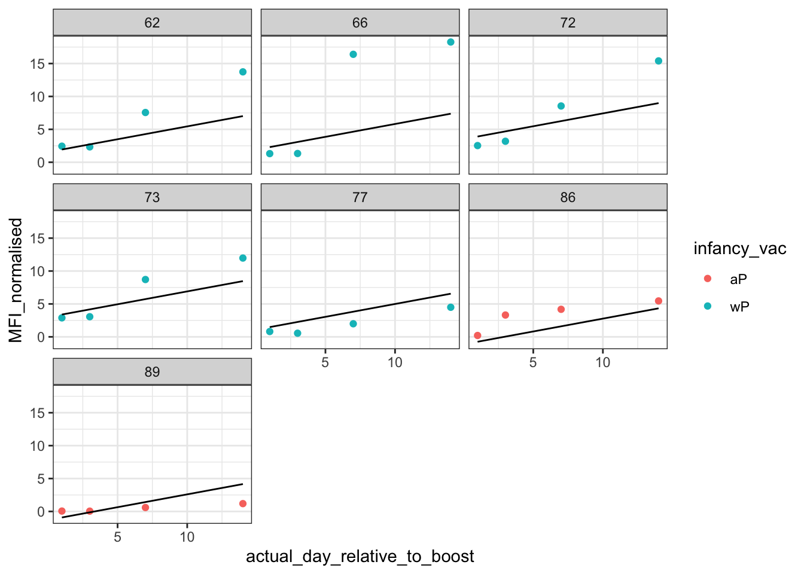
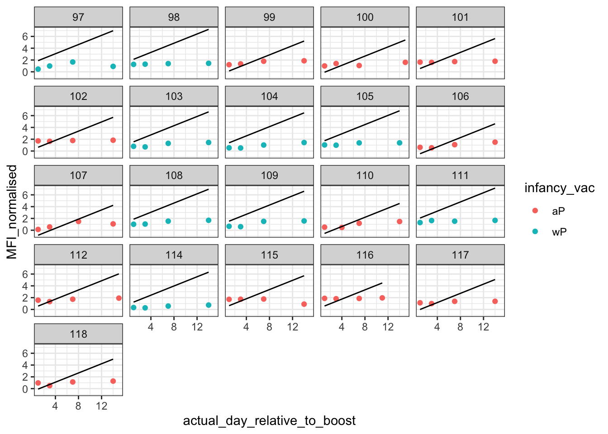

library(tidymodels)
library(readr) # for importing data
library(ggplot2) # for visualizing data
library(dplyr) # for data manipulationWalkthrough of Predicting IgG Titers Using Tidymodels Machine Learning
RECOMMENDED: Going through the walkthrough by viewing the online version of this document is recommended, and available here: https://jhsiao12.github.io/CMI-PB_Walkthrough/. The online version allows you to view the code in a more viewable format, and also click the hyperlinks throughout this walkthrough. Please also download the Quarto file from the following repository to modify and run the code locally: https://github.com/jhsiao12/CMI-PB_Walkthrough/.
Introduction
This document is a step-by-step walkthrough that demonstrates how to build a prediction model using data from Computational Models of Immunity - Pertussis Boost (CMI-PB) database. For this walkthrough, we will use raw data from the CMI-PB predictional challenge database to predict IgG titers at day 14 post-vaccination. More information about the data can be found on the CMI-PB website.
We will be predicting IgG titers using a basic ordinary least squares (OLS) regression model. As with any machine learning model, we will need to have a prediction dataset and a training dataset. The prediction dataset will contain the data we want to predict, and the training dataset will contain the data we will use to train the model.
We will start by pre-processing the data for modeling, learn how to specify and train the model, then perform a prediction of subject IgG titers at day 14 post-vaccination.
Loading Packages
Load Data
Let’s import our antibody titer (ab_titer) data from the online CMI-PB database. We will need the following files:
Prediction data:
2022BD_plasma_ab_titer.tsv,2022BD_subject.tsv,2022BD_specimen.tsvTraining data:
2021LD_plasma_ab_titer.tsv,2021LD_subject.tsv,2021LD_specimen.tsv
The subject and specimen tables contain metadata about the subjects and specimens, which will be helpful in our predictions. The plasma_ab_titer table contains the antibody titer data.
# Specify the url path for training files download
training_url_path <- "https://www.cmi-pb.org/downloads/cmipb_challenge_datasets/current/2nd_challenge/raw_datasets/training_data/"
# Import the training datasets
training_ab_file <- paste0(training_url_path, "2021LD_plasma_ab_titer.tsv")
training_ab <- read_tsv(training_ab_file)
training_subject_file <- paste0(training_url_path, "2021LD_subject.tsv")
training_subject <- read_tsv(training_subject_file)
training_specimen_file <- paste0(training_url_path, "2021LD_specimen.tsv")
training_specimen <- read_tsv(training_specimen_file)
# Do the same for prediction datasets
# Specify the url path for prediction files download (different from training files path)
prediction_url_path <- "https://www.cmi-pb.org/downloads/cmipb_challenge_datasets/current/2nd_challenge/raw_datasets/prediction_data/"
# Import the prediction datasets
prediction_ab_file <- paste0(prediction_url_path, "2022BD_plasma_ab_titer.tsv")
prediction_ab <- read_tsv(prediction_ab_file)
prediction_subject_file <- paste0(prediction_url_path, "2022BD_subject.tsv")
prediction_subject <- read_tsv(prediction_subject_file)
prediction_specimen_file <- paste0(prediction_url_path, "2022BD_specimen.tsv")
prediction_specimen <- read_tsv(prediction_specimen_file)Note: Since CMI-PB releases new data every year, the link used below may not be current. If this occurs, you will have to download the raw datasets from either the following repository or the CMI-PB website, under Data and Resources tab.
If you still have trouble locating the files, there is a helpful Solutions Center where you may post questions and get help from the CMI-PB community.
Data Pre-Processing
Join tables
We want to have a master table for each of the training and prediction datasets such that each one contains antibody titer and associated metadata.
Firstly, subject_id corresponds to the unique identifier for each volunteer, from which specimens (samples) are collected at different time points, designated by specimen_id. To obtain a master metadata table for each of the training and prediction datasets (subject_specimen), we will join the subject and specimen tables by subject_id.
Then, to attach metadata to the training and prediction data, we will join the subject_specimen and abtiter tables by specimen_id.
# Join the subject and specimen tables by subject_id (common denominator for both tables) in the training dataset
training_meta <- inner_join(training_subject, training_specimen, by = "subject_id")
# Do the same for prediction data
prediction_meta <- inner_join(prediction_subject, prediction_specimen, by = "subject_id")
# Join the training antibody titer table to its metadata by specimen_id (common denominator for both tables)
training <- inner_join(training_ab, training_meta, by = "specimen_id")
# Do the same for prediction
prediction <- inner_join(prediction_ab, prediction_meta, by = "specimen_id")Inspect the Data
Now that we have our master tables for the training and prediction datasets, we can inspect the data to see what we are working with.
# Inspect each dataset
head(training)# A tibble: 6 × 20
specimen_id isotype is_antigen_specific antigen MFI MFI_normalised unit
<dbl> <chr> <lgl> <chr> <dbl> <dbl> <chr>
1 468 IgG FALSE PRN 700. 0.111 MFI
2 468 IgG FALSE DT 8924. 0.706 MFI
3 468 IgG FALSE FHA 2362. 10.6 MFI
4 468 IgG FALSE FIM2/3 756. 1.42 MFI
5 468 IgG FALSE TT 14728. 1.11 MFI
6 468 IgG FALSE PT 113. 1 MFI
# ℹ 13 more variables: lower_limit_of_detection <dbl>, subject_id <dbl>,
# infancy_vac <chr>, biological_sex <chr>, ethnicity <chr>, race <chr>,
# year_of_birth <date>, date_of_boost <date>, dataset <chr>,
# actual_day_relative_to_boost <dbl>, planned_day_relative_to_boost <dbl>,
# specimen_type <chr>, visit <dbl>head(prediction)# A tibble: 6 × 20
specimen_id isotype is_antigen_specific antigen MFI MFI_normalised unit
<dbl> <chr> <lgl> <chr> <dbl> <dbl> <chr>
1 740 IgG TRUE DT 232. 2.56 MFI
2 740 IgG TRUE FHA 6038. 1.11 MFI
3 740 IgG TRUE FIM2/3 8426. 2.98 MFI
4 740 IgG TRUE OVA 8423. 2.78 MFI
5 740 IgG TRUE PRN 20267. 1.63 MFI
6 740 IgG TRUE PT 20982. 1.36 MFI
# ℹ 13 more variables: lower_limit_of_detection <dbl>, subject_id <dbl>,
# infancy_vac <chr>, biological_sex <chr>, ethnicity <chr>, race <chr>,
# year_of_birth <date>, date_of_boost <date>, dataset <chr>,
# actual_day_relative_to_boost <dbl>, planned_day_relative_to_boost <dbl>,
# specimen_type <chr>, visit <dbl>Notice that we have IgG against other antigens such as PRN, DT, etc… We are only looking at IgG PT, so let’s filter the data to only include isotype = IgG and antigen = PT.
Filtering for IgG PT Data
We want only IgG PT, so we will reassign the training and prediction objects to only include specimens that are IgG PT.
# Filter the data to only include IgG PT
training <- training %>% filter(antigen == "PT", isotype == "IgG")
prediction <- prediction %>% filter(antigen == "PT", isotype == "IgG")Now, let’s plot the data of MFI_normalised over time (actual_day_relative_to_boost) and see what we have:
ggplot(training,
aes(actual_day_relative_to_boost, MFI_normalised,
col = infancy_vac,
group = subject_id)) +
geom_point() +
geom_line() +
geom_vline(xintercept=0, linetype="dashed") +
geom_vline(xintercept=14, linetype="dashed") +
theme_bw()
While the overall trend is more like a curve, we can see that from day 0 to day 14, the data is more or less linear. Given that we are predicting the antibody titers at day 14, a linear model is a good starting point.
We can go one-step further and make our model more complex. If we look at the plot above, we can see that infancy_vac status has an influence on baseline IgG_PT values (y-intercept), and also the slope from day 0 to day 14 for each subject (each line). We can account for this later when we specify our model by adding infancy_vac as a predictor in the model.
OPTIONAL: try and color the lines by other variables such as biological_sex to see if there are any differences in the data there! You may also try use these other variables as predictors in the model.
Now, let’s firstly split the training data into a training set and a validation set.
Split the Training Data
In machine learning, it is important to split the training data into a training set and a validation set. The training set will be used to train the model, and the validation set will be used to evaluate the model’s performance. Once we have the model, we can use it to predict the antibody titers in the prediction dataset by applying the model to the prediction dataset.
You are welcome to look for other resources to help you understand this concept, since it is a fundamental concept in machine learning. Here is a helpful article to get you started.
First, we want to set the seed. The seed is a number that is used to initialize the random number generator. This ensures that the random numbers generated by the model (i.e. the training and validation sets chosen by the computer) will be the same each time the code is run. This is important for reproducibility, as it allows us to get the same results each time we run the code.
set.seed(123) Then, we use 80% of the training data for training and 20% for validation. We use a special function called group_initial_split to ensure that the training and validation sets are chosen by treating data from a given subject_id as a group (it cannot be split into smaller parts by, say, actual_day_relative_to_boost). This is important, since we want to ensure that all the data for a given subject_id is either in the training set or the testing set, but not both. Otherwise, we will have data that is split up, called data leakage, which can lead to poor model performance.
training_split <- group_initial_split(training, prop = 0.8, group = "subject_id")Now we can extract the training and testing sets from the split:
training_train <- training_split %>% training()
training_validation <- training_split %>% testing()
# We can inspect the training and testing sets to see what they look like
training_train# A tibble: 182 × 20
specimen_id isotype is_antigen_specific antigen MFI MFI_normalised unit
<dbl> <chr> <lgl> <chr> <dbl> <dbl> <chr>
1 468 IgG FALSE PT 113. 1 MFI
2 469 IgG FALSE PT 111. 0.987 MFI
3 470 IgG FALSE PT 126. 1.11 MFI
4 471 IgG FALSE PT 224. 1.99 MFI
5 472 IgG FALSE PT 304 2.70 MFI
6 473 IgG FALSE PT 274 2.43 MFI
7 474 IgG FALSE PT 172. 1.52 MFI
8 483 IgG FALSE PT 279. 2.47 MFI
9 484 IgG FALSE PT 441. 3.92 MFI
10 485 IgG FALSE PT 498. 4.42 MFI
# ℹ 172 more rows
# ℹ 13 more variables: lower_limit_of_detection <dbl>, subject_id <dbl>,
# infancy_vac <chr>, biological_sex <chr>, ethnicity <chr>, race <chr>,
# year_of_birth <date>, date_of_boost <date>, dataset <chr>,
# actual_day_relative_to_boost <dbl>, planned_day_relative_to_boost <dbl>,
# specimen_type <chr>, visit <dbl>training_validation# A tibble: 49 × 20
specimen_id isotype is_antigen_specific antigen MFI MFI_normalised unit
<dbl> <chr> <lgl> <chr> <dbl> <dbl> <chr>
1 475 IgG FALSE PT 125. 1.11 MFI
2 476 IgG FALSE PT 275. 2.44 MFI
3 477 IgG FALSE PT 263. 2.33 MFI
4 478 IgG FALSE PT 852. 7.56 MFI
5 479 IgG FALSE PT 1548. 13.7 MFI
6 480 IgG FALSE PT 1194. 10.6 MFI
7 481 IgG FALSE PT 680. 6.03 MFI
8 506 IgG FALSE PT 170. 1.51 MFI
9 507 IgG FALSE PT 148. 1.31 MFI
10 508 IgG FALSE PT 150. 1.33 MFI
# ℹ 39 more rows
# ℹ 13 more variables: lower_limit_of_detection <dbl>, subject_id <dbl>,
# infancy_vac <chr>, biological_sex <chr>, ethnicity <chr>, race <chr>,
# year_of_birth <date>, date_of_boost <date>, dataset <chr>,
# actual_day_relative_to_boost <dbl>, planned_day_relative_to_boost <dbl>,
# specimen_type <chr>, visit <dbl>Now that we have our training and validation sets, we can begin setting up the model. We will use a basic linear regression model (least squares regression) to predict the antibody titers in the prediction dataset.
The following utilizes the tidymodels framework to specify the model.
The tidymodels framework is a collection of packages for modeling and machine learning using tidyverse principles. More information on this framework can be found in the following link: https://www.tidymodels.org/start/models/.
Preparing Baseline Value Dataframes
Our ultimate goal is to have a model that predicts antibody titer as a function of actual_day_relative_to_boost, infancy_vac, and MFI_normalised_baseline. The reason why we want MFI_normalised_baseline is because we want to account for the baseline antibody titer values for each subject. In other words, any given subject_id will have a different baseline antibody titer value, and if we also know their infancy_vac status, we can use this information to predict their antibody titer at day 14.
subject_id is therefore not a predictor in the model, but rather a grouping variable.
To get MFI_normalised_baseline, we need to add a new column (variable) to our training and validation datasets that contains the baseline antibody titer value for each subject. We can then use this new column as a predictor in our model.
# Create a dataframe by filtering the baseline MFI_normalised values for each subject
baseline_values <- training_train %>%
filter(planned_day_relative_to_boost == 0)
# Create a dataframe that only has baseline values excluded for each subject
non_baseline_values <- training_train %>%
filter(planned_day_relative_to_boost != 0)
# Append baseline_values to non_baseline_values as a separate column and call it MFI_normalised_baseline.
training_df <- non_baseline_values %>%
left_join(baseline_values[,c('subject_id', 'MFI_normalised')], by = "subject_id", suffix = c("", "_baseline"))
# Do the same for training_test
baseline_values <- training_validation %>%
filter(planned_day_relative_to_boost == 0)
non_baseline_values <- training_validation %>%
filter(planned_day_relative_to_boost != 0)
validation_df <- non_baseline_values %>%
left_join(baseline_values[,c('subject_id', 'MFI_normalised')], by = "subject_id", suffix = c("", "_baseline"))
# Let's also make infancy_vac column as factors, since we will be using them as factors in the model
training_validation$infancy_vac <- as.factor(training_validation$infancy_vac)
# Since our end goal is to predict day 14 antibody titers, let's also remove any data in our training and validation sets where actual_day_relative_to_boost is greater than 14
training_df <- training_df %>% filter(actual_day_relative_to_boost <= 14)
validation_df <- validation_df %>% filter(actual_day_relative_to_boost <= 14)Setting Up the Model
In the tidymodels framework, we can specify our linear model using the lm() function. We then use the set.engine() function to specify that we want to use the lm() function to fit the model.
# Specifying the model using the tidymodels framework
lm_spec <-
linear_reg() %>%
set_engine("lm") # using the default lm engine (ordinary least squares regression)
lm_train <- lm_spec %>% # establishing the model to fit the training data with
fit(MFI_normalised ~ actual_day_relative_to_boost + MFI_normalised_baseline + infancy_vac,
data = training_df) # specifying the predictors and the response variable that the model will use to fit the training data
# Apply lm_train to the validation data
ab_validation <- validation_df %>%
mutate(predict(lm_train, validation_df)) # adding a new column to the validation dataframe that contains the predicted antibody titersIMPORTANT!: The advantage of using the tidymodels framework is that if we wanted to change the model to a different type of model, all we need to do is change the linear_reg() function to another function, such as Lasso regression, by changing only the arguments and set_engine() function as follows:
# Specifying the model using the tidymodels framework
# lm_spec <-
# linear_reg(penalty = 0, mixture = 1) %>% # specifies the penalty and mixture for lasso regression
# set_engine("glmnet") # specifies the engine used for lasso
# Fitting the model to the training data
# lm_train <- lm_spec %>%
# fit(MFI_normalised ~ actual_day_relative_to_boost + MFI_normalised_baseline + infancy_vac, data = training_df)
# Apply lm_train to the validation data and score for accuracy
# ab_validation <- validation_df %>%
# mutate(predict(lm_train, validation_df))Feel free to play around with different models and see how they perform. You may consult the documentation for the tidymodels framework for more information on different models and how to specify them.
Ultimately, using tidymodels allows us to easily switch between different models, which would otherwise be more cumbersome to do using the base R functions.
Evaluating the Model
Let’s plot out the data to see how well our model is doing. Each graph represents a different subject, and the black line represents the predicted antibody titers. The colored points represent the actual antibody titers, and the color of the points represents whether the subject received the infancy vaccine or not.
# Evaluate Model Using ggplot
ggplot(ab_validation,
aes(x = actual_day_relative_to_boost, y = MFI_normalised,
col = infancy_vac)) +
geom_point() +
geom_line(aes(y = .pred), color = "black") +
facet_wrap(~subject_id) +
theme_bw()
It appears our model is doing a decent job of predicting the antibody titers from d0 to d14. We can also evaluate the model more quantitatively using the Spearman correlation between predicted and actual antibody titers columns in our ab_validation dataframe.
# Calculate the Spearman correlation
cor.test(ab_validation$MFI_normalised, ab_validation$.pred, method = "spearman")
Spearman's rank correlation rho
data: ab_validation$MFI_normalised and ab_validation$.pred
S = 584, p-value = 1.348e-06
alternative hypothesis: true rho is not equal to 0
sample estimates:
rho
0.8401752 IMPORTANT: depending on how you modify the model specifications, predictor variables, etc, you might get different Spearman correlation values. In making such specifications, you must consider overfitting/underfitting, a concept in machine learning that is very important to consider. Here is a resource to get you started on these concepts.
As given by the relatively high Spearman correlation, the model is doing a good job of predicting the antibody titers.
Now that we have evaluated that our model is doing a good job of predicting antibody titers at d14, let’s now predict the antibody titers in the 2022 prediction dataset using the model we just fit to the training data.
Predicting Antibody Titers in the Validation Dataset
We need to first repeat the preprocessing steps we did for the training and validation datasets for the prediction dataset. This includes adding a new column for the baseline antibody titer values for each subject, and then using the model to predict the antibody titers at d14.
# Create a dataframe that only has the baseline values for each subject
baseline_values_predict <- prediction %>%
filter(planned_day_relative_to_boost == 0)
# Rename baseline values to 'MFI_normalised_baseline'
baseline_values_predict <- baseline_values_predict %>%
rename(MFI_normalised_baseline = MFI_normalised)Now, we will use a function called expand.grid() to create a dataframe that specifies the d14 antibody titer predictions for each subject. We will then apply the model to this expanded dataframe to predict the antibody titers at d14 for each subject in the prediction dataset. Remember, this new dataframe must have all the predictor variables that the model was trained on!
# Expand grid to create d14 output for each subject
new_points <- expand.grid(actual_day_relative_to_boost = 14,
subject_id = unique(baseline_values_predict$subject_id))
# Append MFI_normalised_baseline and infancy_vac values from baseline_values_predict as separate columns to create the final dataframe. We are joining by matching subject_id.
new_points <- new_points %>%
left_join(baseline_values_predict[,c('subject_id', 'MFI_normalised_baseline', 'infancy_vac')], by = "subject_id")
# We now have a dataframe that contains all the information needed for the model to predict the antibody titers at d14 for each subject in the prediction dataset.
# Apply the model to the prediction dataset
ab_prediction <- new_points %>%
mutate(predicted = predict(lm_train, new_data = new_points)) %>%
unnest(predicted)
# Let's inspect ab_prediction to see the predicted antibody titers at d14 for each subject_id
head(ab_prediction)# A tibble: 6 × 5
actual_day_relative_to_b…¹ subject_id MFI_normalised_basel…² infancy_vac .pred
<dbl> <dbl> <dbl> <chr> <dbl>
1 14 114 0.358 wP 6.32
2 14 103 0.704 wP 6.64
3 14 117 1.04 aP 5.07
4 14 98 1.31 wP 7.20
5 14 116 1.68 aP 5.66
6 14 105 0.905 wP 6.82
# ℹ abbreviated names: ¹actual_day_relative_to_boost, ²MFI_normalised_baselineImporting Actual d14 Antibody Titers to Compare
While we have been working with a 2022 dataset (prediction dataset) that only has d0 baseline values, we have access to the actual d14 antibody titers from the 2022 dataset. We can use these to compare our predicted values to the actual values.
The entire 2020, 2021, 2022 antibody titer combined dataset is available from the CMI-PB application programming interface (API). We can use the jsonlite package to import the data, which is in JSON format.
API is an interface that essentially has a set of functions and procedures that allow programs to access data and features from another application. In this case, this would be our computer to CMI-PB data. The API outlines available options (different types of datasets). As a developer, you can make requests to these API endpoints to use them in your own application.
We essentially want to repeat all of the above steps for this new data (except training split). This will allow us to ultimately visualize the predicted vs. actual d0 - d14 antibody titers for each subject in the 2022 dataset.
# Import the data
library(jsonlite)
Attaching package: 'jsonlite'The following object is masked from 'package:purrr':
flattenactual_data <- fromJSON("https://www.cmi-pb.org/api/v4_1/plasma_ab_titer")
# Data Pre-Processing
## Sort the data for 2022 specimens using prediction_specimen metadata
actual_data_2022 <- inner_join(actual_data, prediction_meta, by = "specimen_id")
## Filter for d0 to d14 values for IgG against PT only
actual_data_2022 <- actual_data_2022 %>%
filter(planned_day_relative_to_boost %in% c(0 : 14), antigen == "PT", isotype == "IgG")
# Preparing Baseline Value Dataframes
## Create a dataframe by filtering the baseline MFI_normalised values for each subject
baseline_2022 <- actual_data_2022 %>%
filter(planned_day_relative_to_boost == 0)
## Create a dataframe that only has baseline values excluded for each subject
non_baseline_2022 <- actual_data_2022 %>%
filter(planned_day_relative_to_boost != 0)
## Append baseline values to non-baseline values as a separate column and call it MFI_normalised_baseline.
df_2022 <- non_baseline_2022 %>%
left_join(baseline_2022[,c('subject_id', 'MFI_normalised')], by = "subject_id", suffix = c("", "_baseline"))
# Applying the Model to the 2022 Dataset
ab_2022 <- df_2022 %>%
mutate(predict(lm_train, df_2022))
## Plotting the Predicted and Actual 2022 Data
ggplot(ab_2022,
aes(x = actual_day_relative_to_boost, y = MFI_normalised,
col = infancy_vac)) +
geom_point() +
geom_line(aes(y = .pred), color = "black") +
facet_wrap(~subject_id) +
theme_bw()
## Calculate the Spearman correlation
cor.test(ab_2022$MFI_normalised, ab_2022$.pred, method = "spearman")
Spearman's rank correlation rho
data: ab_2022$MFI_normalised and ab_2022$.pred
S = 61638, p-value = 0.0004651
alternative hypothesis: true rho is not equal to 0
sample estimates:
rho
0.3759441 Discussion
As you can see with our plotted predicted vs. actual 2022 data, and the Spearman Correlation, the model that was trained on 2021 data does very poorly on the 2022 data. This represents the goal of systems vaccinology - to understand how to better predict the immune response to a vaccine in a new population. The very basic model we used in this tutorial is not sufficient to predict the immune response to the vaccine, and highlights how there is much to learn about how to predict the immune response to vaccines in different populations. Understanding this will ultimately allow better vaccine design, and therefore more robust individual and population immunity against preventable diseases.
Possible Extensions
As mentioned previously, the tidymodels framework allows you to change the model type easily. This is useful if you want to compare different models to see which one performs best. Feel free to try different models and compare their performance qualitatively by plotting the predicted values against the actual values for each subject in the validation dataset, and quantitatively using Spearman correlation. You may also try other methods of evaluating the model, such as mean squared error or root mean squared error.
You may also choose to change the predictor variables in the model to see if you can improve the model’s performance. For example, you may want to include other variables such as age, sex, race, etc. to see if they improve the model’s performance.
To extend your learning, you may choose to look at other datasets in the CMI-PB challenge to see if you can model other types of data, such as PBMC cell frequency. These other datasets may be found here.
We hope that this tutorial has given you a good introduction to the tidymodels framework and how to use it to fit a basic machine learning model to predict antibody titers. For additional information/resources, please refer to the tidymodels website. Some other useful things to learn to deepen you knowledge include: Lasso regression, Ridge regression, Elastic net regression, and any other type of modeling method you are interested in.